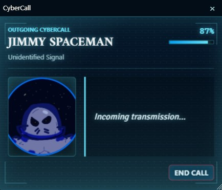
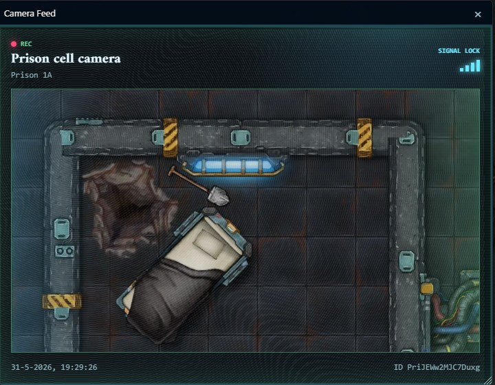
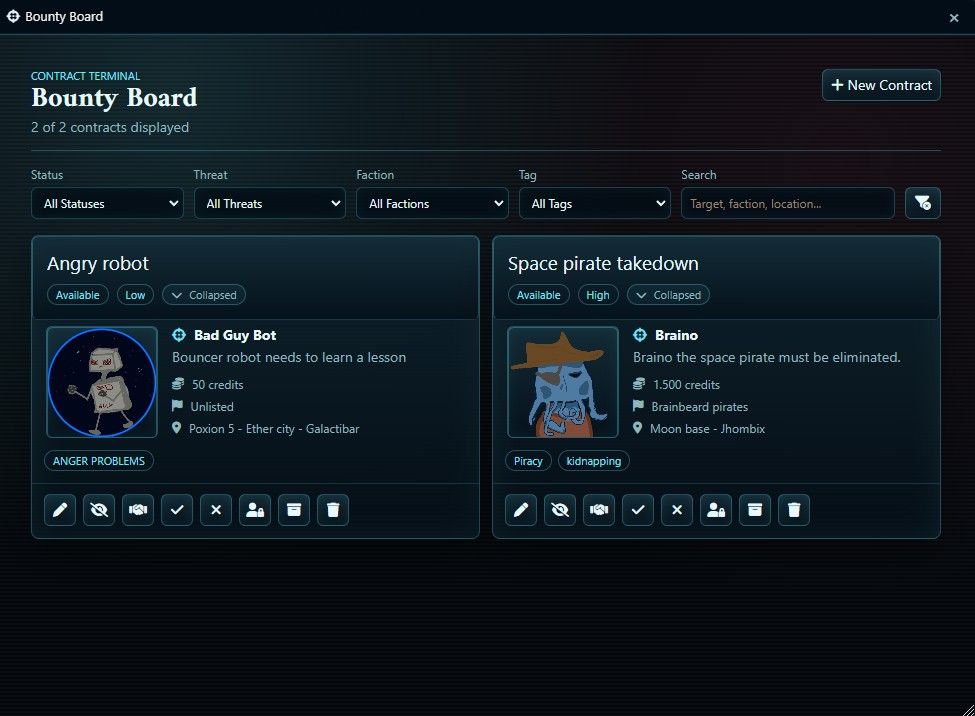
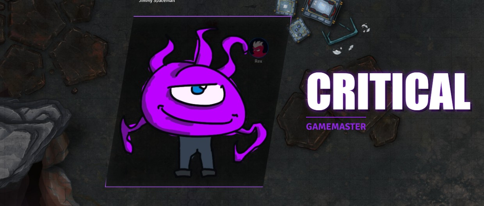
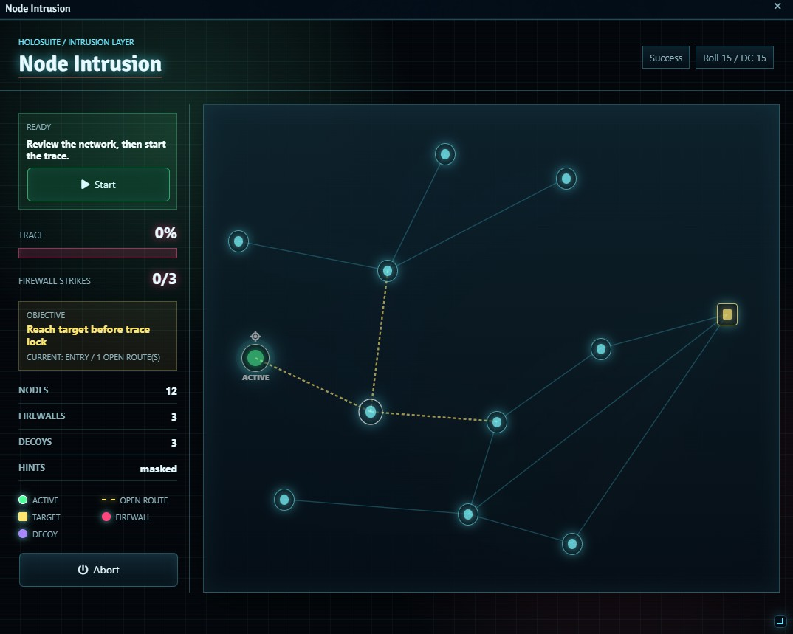

Core app
HoloSuite Core
A GM-only sci-fi phone launcher and registration API for HoloSuite modules.
- One-click access to installed apps
- Shared visual tokens and suite integration
- Required by most HoloSuite modules
Mage Tower Studios for Foundry VTT
A modular suite of sci-fi, cyberpunk, and space-opera tools for holographic calls, star maps, camera feeds, investigations, hacking scenes, and campaign job boards.
Free module lineup
Core app
A GM-only sci-fi phone launcher and registration API for HoloSuite modules.

Comms
Holographic calls, player-to-GM calling, contacts, ringtones, and message threads.

Surveillance
Live and static camera feeds wrapped in cyberpunk overlays for player broadcasts.

Investigation
Collaborative case boards for evidence, suspects, locations, timelines, and theories.

Navigation
Cinematic star maps with clickable systems, travel routes, ship movement, and reveals.

Contracts
A sci-fi contract terminal for creating, publishing, claiming, and resolving bounties.

Combat
Sci-fi critical hit animations triggered by qualifying natural d20 results.

Minigames
Playable cyberpunk hacking minigames where skill checks shape puzzle difficulty.
More HoloSuite apps
A system-agnostic ship loadout overview for HoloSuite.
Diegetic sci-fi terminal interfaces for mail, files, trash, and camera feeds.
Configurable sci-fi vending machines for Scene Tiles, limited stock, and item-currency purchases.
GitHub Pages ready
In the repository settings, open Pages, choose deploy from branch, select the main branch, and set the folder to /docs. GitHub will publish this static site directly.